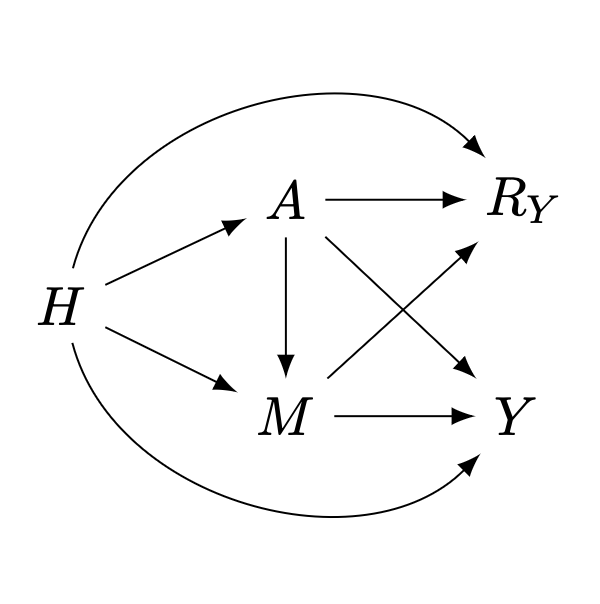
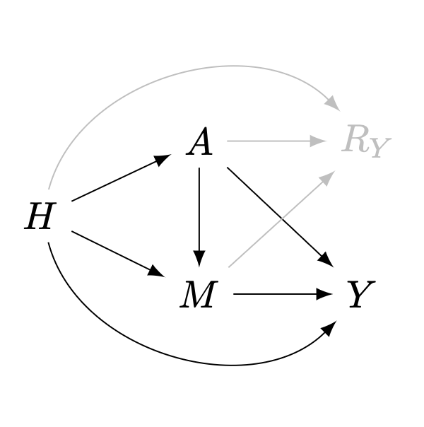

Recovering causal effects from post-treatment selection induced by missing outcome data
Setting
Consider the following \(m\)-graph1, \(\mathcal{G}\), representing the causal relations among a set of random variables \(\mathcal{V}=\{H,A,M,Y,R_Y\}\), where:
- \(H\in\mathbb{R}^d\) is a vector of pre-treatment and context covariates
- \(A\in\{0,1\}\) is a binary exposure
- \(Y\) is the outcome of interest, with general support (univariate or multivariate, discrete or continuous)
- \(M\) is a mediator on the causal pathway from \(A\) to \(Y\), with general support
- \(R_Y\in\{0,1\}\) is an indicator of sample selection for \(Y\), i.e., for a given sample, \(R_Y=1\) means \(Y\) is observed; otherwise \(Y\) is missing (denoted with proxy \(Y^*=\emptyset\)).

Our goal is to estimate the average treatment effect (ATE), \(\psi\), in the target population, defined as:
\[ \psi = \Delta_a\mathbb{E}[Y\mid do(A=a)] := \mathbb{E}[Y\mid do(A=1)]-\mathbb{E}[Y\mid do(A=0)] \]
The problem of identifiability
When there is no sample selection nor missingness, or when missing is completely at random (MCAR), all arrows pointing to \(R_Y\) are absent. The \(m\)-graph representing the system correspond to a causal graph \(\mathcal{G}'\equiv\mathcal{G}[\overline{R_Y}]\), and samples are obtained from the observational distribution \(P(H,A,M,Y)\). This is the traditional setting motivating causal inference with observational data.

Under the assumptions embedded in the causal graph \(\mathcal{G}'\), and a special mutilation known as the back-door graph \(\mathcal{G}'[A\!-\!Y]\)2, \(\psi\) is nonparametrically identifiable from \(P(H,A,M,Y)\) via the back-door formula (Pearl 1995, 2012), as: \[ \psi = \Delta_a\mathbb{E}_H\mathbb{E}[Y\mid A=a,H] \]
Given identifiability plus \(N\) i.i.d. sample from \(P(H,A,M,Y)\), a consistent estimator can be constructed using a regression model for the outcome \(\hat{Q}(A,H)=\hat{\mathbb{E}}[Y\mid A,H]\) and proceeding with \(g\)-computation (Robins 1986): \[ \hat{\psi} = N^{-1}\sum_{i=1}^{N}\Delta_a\hat{Q}(a,H_i) \]
The problem of recoverability
A (causal) parameter is said to be recoverable from the observed-data distribution \(P(H,A,M,Y^*,R_Y)\equiv\{P(H,A,M,Y\mid R_Y=1),P(H,A,M) \}\) if it can be uniquely computed from it using the assumptions embedded in \(\mathcal{G}\) (and the necessary graph mutilation).
Under identifiability in the substantive model 3, \(\mathcal{G}[\overline{R_Y}]\), there is an ample number of methods to recover joint/conditional distributions from sample selection/missingness, based on different statistical theories. Although not originally motivated by graphical models, they can be seen as ad hoc solutions under special graphical conditions (Mohan and Pearl 2021). Table 1 presents a summary of literature review 4 benchmarking four methodological approaches in terms of:
- Graphical conditions for recoveravility: from hard (\(\bigstar\)) to easy (\(\bigstar\bigstar\bigstar\)) to fulfill/believe
- Flexibility in model specification: from parametric (\(\bigstar\)) to ML/nonparametric (\(\bigstar\bigstar\bigstar\))
- Statistical efficiency: from wider (\(\bigstar\)) to narrower (\(\bigstar\bigstar\bigstar\)) confidence/credible intervals
- Computational efficiency: from slow (\(\bigstar\)) to fast (\(\bigstar\bigstar\bigstar\)) computation/convergence
| Method | Graph cond. | Flex. spec. | Stat. eff. | Comp. eff. |
|---|---|---|---|---|
| Expectation-maximization (Dempster, Laird, and Rubin 1977) | \(\bigstar\) | \(\bigstar\) | \(\bigstar\bigstar\) | \(\bigstar\) |
| Multiple imputation (Rubin 1976, 1978) | \(\bigstar\) | \(\bigstar\bigstar\bigstar\) | \(\bigstar\bigstar\) | \(\bigstar\bigstar\) |
| Inverse probability weighting (Robins and Rotnitzky 1992; Robins, Rotnitzky, and Zhao 1994) | \(\bigstar\bigstar\bigstar\) | \(\bigstar\bigstar\) | \(\bigstar\) | \(\bigstar\bigstar\bigstar\) |
| Regression adjustment (Bareinboim, Tian, and Pearl 2014; J. Correa, Tian, and Bareinboim 2018) | \(\bigstar\bigstar\) | \(\bigstar\bigstar\bigstar\) | \(\bigstar\bigstar\bigstar\) | \(\bigstar\bigstar\bigstar\) |
Arguably, the best set of properties come from IPW and regression adjustment, due to their direct derivation from graphical criteria, which might extend the Rubin-MAR setting. Moreover, both solutions have important theoretical results from the theory of semiparametric estimation, and produce doubly- or multiply-robustness when combined. These reasons have motivated syncretic estimators, such as:
| Method | Can use ML libraries | Fast consistency | Plug-in for target | Bayesian version |
|---|---|---|---|---|
| Augmented inverse probability weighting (AIPW) (Robins, Rotnitzky, and Zhao 1994) | Yes | Yes | No | No |
| Targeted learning (Laan and Rose 2011) | Yes | Yes | Yes | Yes\(^*\) |
| Debiased machine learning (DML) (Chernozhukov et al. 2018) | Yes | No | No | No |
Recoverability via IPW
\[ \begin{aligned} p(Y\mid do(A)) &= \int\frac{ \text{d} H}{p(A\mid H)}\int \frac{\text{d} M}{\mathbb{P}(R_Y=1\mid H,M)}\, p(Y,A,H,M\mid R_Y=1) \\ &= \mathbb{E}_{H\mid R_Y=1}\left[\frac{p(Y,A\mid H,M,R_Y=1)}{p(A\mid H)\, \mathbb{P}(R_Y=1\mid H,M) } \right] \end{aligned} \]
\[ \hat{\psi}^{w} = N_1^{-1}\sum_{i=1}^{N_1}\frac{(2A^i-1)\,Y^i}{\hat{p}(A^i\mid H^i)\,\hat{\mathbb{P}}(R_Y=1\mid H^i,M^i) } \]
Recoverability via regression adjustment
Multiple robustness
Notice that, working with samples from \(P(H,A,M,Y^*,R_Y)\equiv\{P(H,A,M,Y\mid R_Y=1),P(H,A,M) \}\) implies conditioning on \(R_Y=1\) (Bareinboim and Pearl 2012). In the \(m\)-graph of figure 1, \(\mathcal{G}\), such condition opens the following non-causal paths:
- \(A\longrightarrow R_Y\longleftarrow H\longrightarrow Y\)
- \(A\longrightarrow R_Y\longleftarrow H\longrightarrow M\longrightarrow Y\)
- \(A\longrightarrow R_Y\longleftarrow M\longrightarrow Y\)
References
Footnotes
\(m\)-graphs generalize causal graphs in settings with sample selection (Hernán, Hernández-Díaz, and Robins 2004) and missing data (Mohan and Pearl 2021).↩︎
The back-door graph \(\mathcal{G}'[A\!-\!Y]\) is the graph resulting from removing in \(\mathcal{G}'\) the first arrow of all directed paths from \(A\) to \(Y\). It is termed the proper back-door graph in multi-exposure settings, and results from removing the first arrow of all directed and non-self-intersecting paths from \(A\) to \(Y\).↩︎
Recoverability might be possible without identifiability in the substantive model, via (fairly complicated) \(c\)-factorizations (J. D. Correa, Tian, and Bareinboim 2019) or \(\phi\)-factorizations (Bhattacharya et al. 2020) related to the problem of \(g\)-identifiability↩︎
Literature review based on Seaman and White (2013), Dong and Peng (2013), Perkins et al. (2017), Lewin et al. (2018)↩︎